00全景与读法
长上下文降本只有两个调节维度：存什么（KV cache 保留多少内容）与看什么（每个 query 真正参与计算的数量）。D04 的 MSA 只动后者——真实 KV 全量留存，每 query 只读 2048 token。DeepSeek-V4 把两个维度同时调节，并且按层分配：CSA 层压 4× 且选 top-k（两个维度都取中间值），HCA 层压 128× 且全看（压缩到位后选择已多余）。两类层逐层交替，使 cache 主体由高压缩块构成——这是 1M KV cache 能降至约 10% 的根本原因：不是靠"少看"，而是靠"少存"。代价是压缩有损、算子定制、移植成本高，超长精确检索是固有风险点。对昇腾而言它有一个独特的位置：已经在 vLLM-Ascend 910B 上运行，是无需等待移植的现成 rollout 基线。
每一节固定三段：朴素基线（左栏，灰，不看技术报告时的直觉实现）/ 它的做法（右栏，橙，V4 的实际设计）/ 差在哪（下方色块，指出差异、原文是否给了理由、对 RL-on-NPU 的含义）。数字按来源分三类：自报 技术报告或厂商口径、第三方 独立来源（如 vLLM-Ascend 支持矩阵）、推断 本站分析。原文对全部规格与评测数字标注 provisional，本文保留该限定。
建议与 D04 对照阅读：两篇在第 07 节交汇——V4 是压缩派，MSA 是真实 KV 选块派，两者的风险点分别落在"压缩丢细节"与"top-k 漏块"上。
01定位与规格
DeepSeek-V4 不是单个模型，是一对。延续 DeepSeekMoE + MLA 技术脉络，但本代的核心变化在注意力。
| V4-Pro | V4-Flash | |
|---|---|---|
| 总参数 / 激活 | 1.6T / 49B | 284B / 13B |
| 上下文 | 1M | 1M |
| 许可 | 开源（MIT） | 开源（MIT） |
| 输出价（参考） | 约 $3.48 / 1M | $0.87 / 1M |
| 发布 | 2026-04-24 | 2026-04-24 |
朴素基线
发布一个旗舰模型，再按需蒸馏出小版本；小版本是旗舰的缩减品，架构上不需要单独考虑。
它的做法
自报 Pro 与 Flash 同日发布、同为 1M 上下文、同为 MIT；激活参数 49B 对 13B（约 3.8 : 1），输出价 $3.48 对 $0.87（约 4 : 1）。原文未说明 Flash 是独立训练还是由 Pro 派生。
差在哪对本看板的意义在于两个尺寸给了两个不同的 NPU 角色候选：Flash 的 13B 激活使其更接近单机 rollout 可行域，Pro 是能力上限。原文只给规格与价格，没有给 Flash 的独立评测分数（第 10 节的分数均为 V4-Pro）。
02核心：混合注意力，逐层交替
V4 不再用单一注意力，而是逐层交替两种压缩注意力，各管一段职责。① CSA — Compressed Sparse Attention（压缩稀疏）：沿序列维把 KV 压缩 4×，用 softmax-gated pooling（带可学习位置偏置）把相邻 KV 聚合成块；然后做稀疏选择——query 只看选中的压缩块；角色是在"还算精细"的粒度上保留检索 / 局部细节。② HCA — Heavily Compressed Attention（重压缩）：把 KV 压缩 128×，极度浓缩成很少的块；完全放弃稀疏选择，每个 query 稠密地看所有压缩块；角色是用极低成本提供"全局视野"——块数已少至可全部读取。

这张图怎么读
要读的是交替发生在层维度而非序列维度：同一个 token 在第 1 层被 CSA 处理、第 2 层被 HCA 处理，两种视野在深度方向上叠加，而不是把序列切成"近处用 CSA、远处用 HCA"。这意味着任何一个 token 的表示都经过了两类层，HCA 丢失的细节在下一层 CSA 有机会补回——这是第 06 节"补偿措施①"的图形依据。
图中每层标签的括号是本图最重要的信息：CSA 的"压 4× + 选块"与 HCA 的"压 128× + 全看"分别是"存什么"与"看什么"两个维度的两组取值（第 03 节）。图未给出实际的交替比例（是否严格 1 : 1）与总层数，原文也未给。
朴素基线
全模型使用同一种注意力（全注意力、或统一的一种稀疏 / 压缩注意力），各层结构相同，便于实现与并行。
它的做法
自报 两种注意力按层交替：CSA 层与 HCA 层压缩比不同（4× 对 128×）、读取策略不同（选 top-k 对稠密全看）、职责不同（细节对全局）。原文用"一层精选、一层通览"概括。
差在哪差别在把"细节"与"全局"两种需求分派给不同的层，而不是让一种机制兼顾。原文给了理由（第 06 节：单一 CSA 会漏弥散依赖，单一 HCA 会毁精确任务），但没有给交替的具体模式、两类层的数量比、以及哪一类放在第一层。对 NPU 的含义：推理引擎需要同时实现两套 KV 压缩与两套读取路径，且按层切换——这是第 11 节"移植风险点"的来源。
03存什么 vs 看什么：压缩路线与选块路线
长上下文降本本质上只有两个调节维度：存什么（KV cache 中保留多少内容）和看什么（每个 query step 真正参与注意力计算的数量）。两条主流路线各优化其一。选块路线（MiniMax MSA）优化的是"看多少"：真实未压缩的 KV 全量留在显存，每个 token 的 K/V 完整保存，降本发生在注意力"读取端"——用一个轻量 Index 模块为当前 query 打分、选 top-k 块，query 只对这 k 个块算 attention，节省的是 FLOPs 和带宽，但未节省 KV cache 本身（1M token 的 KV 体积不变）；好处是被选中的块保持原始数值、精度不丢失，attention 算子仍是标准稠密 kernel，易加速、易移植。压缩路线（V4 CSA / HCA）优化的是"存什么 / 存多少"：KV 进 cache 之前先压缩，把相邻 K/V 用 softmax-gated pooling 聚合成"块表示"，cache 里存的不再是逐 token K/V 而是压缩块，降本直接发生在"存储端"（CSA 压 4×、HCA 压 128×），代价是压缩有损、丢失 token 级细节，且定制算子移植成本高、须防范 train-inference 漂移。
V4 的关键在于将两个维度结合调节。单纯压缩存在矛盾：压缩较轻（4×）细节尚存但块数仍多、query 全量读取依然昂贵；压缩较重（128×）块数少到可全量读取但细节丢失过多。V4 的解法是分层用不同压缩比配不同读取策略：CSA 层压 4× + 仍稀疏选 top-k，既压缩又选择、两个维度均取中间值；HCA 层压 128× + 放弃选择、稠密全量读取，压缩本身已把读取量降到可全量读取的程度，选块反而多余。两类层逐层交替，使整个 cache 主体由高压缩块构成——这是 1M KV cache 能降至约 10% 的根本原因：不是靠"少看"，而是靠"少存"；同时单 token FLOPs 降到 V3.2 的 27%，因为大量层走"块少 + 不选"的低成本稠密路径。
朴素基线
长上下文成本是一个量，稀疏与压缩是达成同一目标的两种手段，选一种即可；两者叠加是锦上添花。
它的做法
推断 两个维度对应两类成本：存什么决定 KV 显存，看什么决定 FLOPs 与带宽。只压不选（轻压）读取仍贵，只压不选（重压）细节全失，只选不压显存不降。V4 按层给两个维度配不同取值，MSA 只取"看什么"一个维度。
差在哪这是理解 V4 与 MSA 分歧的坐标系：两个维度不是同一目标的两种手段，而是两类成本的两个开关。原文明确把 10% KV 归因于"少存"、27% FLOPs 归因于"大量层走稠密低成本路径"——两个数字来自两个不同的维度。对 RL-on-NPU 的含义：910B 上 rollout / train 争用 HBM 的瓶颈主要是显存（第 11 节），因此"存什么"维度的收益对本看板比 FLOPs 收益更直接。
04CSA：精选层
CSA = 精选层——压 4× 块表示仍相对精细，token 级局部结构和可检索信息基本得以保留，能承担"近处细节"和"精确检索"这类对精度敏感的任务；但 4× 压缩后块数依然庞大（1M token 压 4× 仍有约 25 万块量级），query 无法全量读取，所以 CSA 必须配 top-k 稀疏选择，角色是"看清近处 + 选中的关键远处块"。压缩用 softmax-gated pooling 并带可学习位置偏置，聚合并非简单平均、保留一定块内结构。

这张图怎么读
与 D04 的 MSA 数据流对照，这张图多了一个节点：pooling。MSA 的选块直接作用于真实 KV，CSA 的选块作用于压缩块——即"选"发生在"压"之后。因此 CSA 的 top-k 选出的每一个块都已经是 4 个 token 的聚合表示，被选中的块内部也不再有逐 token 的精度。
pooling 节点上的"带可学习位置偏置"是原文补偿措施②的所在：它使聚合不是简单平均，块内位置结构得到部分保留。图中没有出现 CSA 的 top-k 值与块大小，原文也未给出——这是复现必须自定的数值（第 13 节）。
朴素基线
压缩 KV 用平均池化即可；压缩后块数减少，全量读取成本自然下降，不需要再做选择。
它的做法
自报 用 softmax-gated pooling 而非简单平均，带可学习位置偏置；压 4× 后 1M 仍有约 25 万块量级，无法全量读取，故必须叠加 top-k 稀疏选择。推断 "约 25 万块"为原文按 1M / 4 的量级估算。
差在哪差别在4× 压缩不足以省掉选择：原文用块数量级（约 25 万）给出了理由——压得轻则必须选。CSA 因此在两个维度上都取中间值，是三种配置（只压 / 只选 / 压且选）中最复杂的一种。原文没有给 CSA 的 top-k 值、块大小、选块打分方式，也没有单独给 CSA 层的成本占比。
05HCA：通览层
HCA = 通览层——压 128× 后块数极少（1M token 只剩几千块量级），少到 query 可以稠密全量读取而无需再选，代价是单块浓缩了上百个 token、token 级细节几乎全部丢失，块表示只剩"该段大致内容"的粗粒度语义。但这恰是全局视野所需：无需从 90 万 token 之外精确取回某个变量名（该任务由 CSA 承担），只需知道远处存在一大块相关上下文，HCA 用极低成本为每个 query 提供覆盖全序列的概览。
这张图怎么读
与图 2 对照，这张图少了两个节点：没有 pooling 细节标注（原文未说明 HCA 的压缩算子是否与 CSA 同为 softmax-gated pooling），也没有 top-k 选择。链路是一条直线，没有分支——这本身就是信息：HCA 层的读取路径是稠密的，从 kernel 角度看是标准注意力作用在一个很短的序列上（1M 压 128× 后几千块量级）。
这解释了第 10 节 27% FLOPs 的来源：原文归因于"大量层走 HCA 块少 + 不选的低成本稠密路径"。也解释了 HCA 的风险位置：图中"浓缩成极少的块"这一步是不可逆的有损压缩，之后的所有计算都只能看到粗粒度语义。
朴素基线
压缩比越高信息损失越大，128× 是不可接受的；即便压缩到几千块，仍应做选择以进一步省算力。
它的做法
自报 128× 压缩被接受，因为 HCA 的职责只是"知道远处存在相关上下文"，精确取回由 CSA 层承担；几千块量级已可稠密全读，选择反而多余。推断 "几千块量级"为原文按 1M / 128 的量级估算。
差在哪差别在HCA 不是独立可用的注意力，而是一个只在有 CSA 兜底时才成立的组件。原文给出的理由是职责分工，而非 128× 压缩本身无损。这也是为什么 V4 的两种机制"缺一不可"（第 06 节）。对 NPU 的含义：HCA 层的注意力计算本身是最容易移植的部分（短序列稠密），难点在 128× 压缩算子。
06两种机制交替的必要性与精度补偿
两者缺一不可：只有 CSA，会因始终在"选块"而遗漏未被选中的弥散全局依赖；只有 HCA，128× 有损压缩会使所有需要精确 token 的任务（代码定位、精确检索、数值）严重退化。压缩的精度风险与补偿：128× 丢失的是 token 级位置精度、低频稀有信息（易被 pooling 平均掉）、逐 token 比对的细粒度检索；V4 主要靠四项措施补偿——① 交替结构保证每隔一层就有 CSA 补回细节，HCA 丢失的由 CSA 补偿；② CSA 的 pooling 带可学习位置偏置，聚合并非简单平均、保留一定块内结构；③ mHC 流形约束超连接稳住深层信息流，避免高压缩层的信号逐层劣化；④ MTP 提供更密集的训练信号，迫使压缩表示保留足够预测未来 token 的信息。即便如此，压缩路线在超长精确检索上仍是固有风险点，需专门评测持续跟踪。
朴素基线
压缩带来的精度损失靠增大模型或增加训练数据弥补；注意力机制的缺陷与其他架构件无关。
它的做法
自报 四项补偿分布在四个层次：结构（交替）、算子（位置偏置）、残差流（mHC）、训练目标（MTP）。原文明确保留限定：即便如此，超长精确检索仍是固有风险点。
差在哪差别在补偿被设计进架构的多个层次，而不是留给规模。这一节把 mHC 与 MTP 从"其他架构件"提升为混合注意力的组成部分——原文的因果链是：高压缩 → 信号可能逐层劣化 → mHC 稳住信息流；高压缩 → 表示可能丢掉预测所需信息 → MTP 迫使保留。这是本站认为原文最值得保留的推理链。注意四项补偿均无单独的消融数字。
07与 MSA 对照：两条思路
这与 MSA（单一块稀疏、在真实未压缩 KV 上选 top-k）是两条思路。
| DeepSeek-V4（CSA + HCA） | MiniMax MSA | |
|---|---|---|
| KV | 压缩（4× / 128×） | 不压，真实 KV |
| 选择 | CSA 选块 / HCA 全看 | Index 分支选 top-k 块 |
| 风格 | 双机制交替、高压缩比 | 单机制、复用标准 kernel |
| 取舍 | 长上下文内存最省；移植成本高 | 务实、易加速、易移植 |

这张图怎么读
两条链逐行对齐读：第一行是对 KV 的处理（压 / 不压），这是两派的分歧起点；第二行是选择机制；第三行是机制数量；第四、五行是收益与代价。要读的是两条链的末端方向相反：V4 链以"移植成本高"收尾，MSA 链以"易移植"收尾——两派在第一行的选择几乎决定了末行的结论。
图中没有质量维度：两条路线在多跳推理 / 长检索上的稳定性对比原文没有数字，是第 14 节第三条关注项。图也没有表达两派可以叠加的可能性（原文亦未讨论）。
朴素基线
V4 与 MSA 都是"稀疏注意力"，选哪个看分数；机制差异是实现层面的细节。
它的做法
推断 两派的风险点不同：V4 的风险在 128× 压缩丢 token 级细节（超长精确检索），靠 CSA 层兜底；MSA 的风险在 top-k 是否选中目标块，真实 K/V 不丢精度。两派的 NPU 成本也不同：V4 定制算子双机制，MSA 复用标准 kernel。
差在哪两派失败的方式不同：V4 的失败是"取回了但不够精确"，MSA 的失败是"完全没取回"。这决定了评测方式——前者要看精确检索类任务的退化，后者要看召回类任务的漏检。原文的对照全部是定性判断，无任何一项两派在同一基准上的数字。
08其他架构件
mHC（Manifold-Constrained Hyper-Connections）：对传统残差连接的增强版"超连接"，约束在流形上以稳住深层信息流。Muon 优化器：更快收敛 + 更稳的训练（取代 / 补充 AdamW 一类）。MTP（Multi-Token Prediction）：保留多 token 预测模块——既提训练信号，又能在推理时做投机解码。FP4 + FP8 混合精度：MoE 专家用 FP4、其余参数用 FP8 训练——这是 V4 验证过的低精度训练栈，直接对应下一代昇腾 950 的原生 FP8 / MXFP4。
朴素基线
标准残差连接 + AdamW + 单 token 预测 + BF16 训练；低精度只用于推理量化。
它的做法
自报 mHC 替代标准残差、Muon 替代 / 补充 AdamW、MTP 保留在模型中、训练即用 FP4（专家）+ FP8（其余）。原文对四项均只给定位与作用，无单独数字。
差在哪四项中对本看板最重要的是 FP4 + FP8 训练：它是"低精度训练在前沿规模上可行"的一个实证，与 D02 / D03 的"FP8 RL on Ascend"主线直接对接，且对应 950 的原生 FP8 / MXFP4。其次是 MTP——它在 NPU 上的具体用法见第 11 节（KV-cache 分片投机解码）。原文没有给 FP4 专家的精度损失数字，也没有给 Muon 的收敛加速比。
09训练 / 后训练：先分别训练专家，再蒸馏合并
V4 的后训练是两阶段：① 独立培养领域专家——对不同领域分别做 SFT + RL（GRPO），分别强化各自领域能力；② 统一合并——用 on-policy 蒸馏把这些各有所长的专家整合进一个模型，跨领域能力收敛到单体。配合 32T+ token、多教师蒸馏的数据管线。这套"分别训练—合并"思路，本身就是一个值得在昇腾上复现的 RL + 蒸馏流程。

这张图怎么读
看三条通道之间没有任何横向连线：阶段一里领域 A / B / C 完全隔离，每条通道的 reward 只来自本领域——这就是原文所说的"纯净优化通道"，也是它避免混合 RL 相互干扰的手段。三条通道在阶段一的末端各自得到一个专家，专家数量与领域数量一一对应（图以 A / B / C 三个为示意，原文未给实际领域数）。
阶段二的合并节点标注"on-policy 蒸馏"：合并不是权重平均，也不是离线蒸馏。原文强调 on-policy 的理由是学生在自身分布上采样、教师在这些轨迹上给目标（避免 exposure bias）。虚线"支撑"表示数据管线（32T+ token、多教师）是合并阶段的输入而非另一条通道。对 RL-on-NPU 而言，阶段一的每条通道都是一个独立的 GRPO 任务，天然可并行。
先分别训练再蒸馏合并的原因。最直接的做法是把所有领域数据混合在一起做一轮 RL，但实践中会相互干扰：不同领域的 reward 尺度、最优策略、输出风格各不相同（代码要严格可执行、数学要步骤严谨、对话要自然），混合做 GRPO，梯度相互冲突，出现此消彼长（代码提升而数学下降、风格对齐而推理受损），reward 信号也受到污染（一个 batch 混杂多领域优势估计，噪声大、方向不一致）。第一阶段分领域独立训练：各自独立 SFT + RL（GRPO），每个领域是一条纯净的优化通道——reward 只来自本领域、策略只朝本领域最优演进，专家在自己领域被充分优化至上限、不受其他领域梯度干扰。第二阶段 on-policy 蒸馏合并进单体：关键是用 on-policy 而非离线蒸馏——离线蒸馏让学生拟合教师预先生成的固定输出，而这些输出落在教师分布上，学生推理时遵循自身分布，二者不匹配（exposure bias）；on-policy 蒸馏让学生先自行采样生成（在自身分布上），再由对应领域教师对这些 on-policy 轨迹打分 / 提供目标分布，学生在自身实际产生的状态上对齐教师，显著减少分布漂移、合并后跨领域更稳。
朴素基线
把所有领域数据混合，做一轮统一的 SFT + RL；一个 reward 混合函数覆盖全部任务。
它的做法
自报 分领域独立 SFT + RL（GRPO），再以 on-policy 蒸馏合并；配合 32T+ token 多教师蒸馏。推断 原文对"混合 RL 相互干扰"的描述（梯度冲突、此消彼长、优势估计噪声）为机制分析，无消融数字；原文亦未给出领域数量、各专家规模、合并阶段的 token 预算。
差在哪差别在把多领域 RL 的冲突从优化问题转成了工程问题：不在一个 batch 内调和不同 reward 尺度，而是分开训、再用一个与 reward 无关的目标（蒸馏）合并。原文给了完整理由，但没有任何数字证明分训优于混训。对 RL-on-NPU 的含义有两层：阶段一的每条通道是一个独立的 GRPO 作业，可在集群上并行且互不依赖；阶段二的 on-policy 蒸馏要求学生在线采样，即它本身也是一个 rollout 密集的过程——两个阶段都落在本看板关注的 rollout 效率问题上。
10效率与评测分数（论文 / 厂商口径，provisional）
效率：1M 上下文下，V4-Pro 单 token 推理仅需 V3.2 的 27% FLOPs 和 10% KV cache——混合注意力将长上下文成本降至约 1/4 ~ 1/10。质量：V4-Pro（Max）SWE-bench Verified 80.6%，开源最强、与 Gemini 3.1 Pro 持平；LiveCodeBench 约 93.5%。价格：V4-Flash 输出 $0.87 / 1M——在开源模型中具备明显竞争力。
| 指标 | V4-Pro | 说明 |
|---|---|---|
| 单 token FLOPs（1M） | V3.2 的 27% | 大量层走 HCA "块少 + 不选"的低成本稠密路径 |
| KV cache（1M） | V3.2 的 10% | 压缩派核心收益：CSA 4× / HCA 128×，cache 存压缩块 |
| SWE-bench Verified | 80.6% | 开源最强，与 Gemini 3.1 Pro 持平 |
| LiveCodeBench | 约 93.5% | 代码能力第一梯队 |
| 输出价格（V4-Flash） | $0.87 / 1M | Flash（284B / 13B 激活）推理成本 |
| 维度 | V4 CSA + HCA（压缩派） | MiniMax MSA（选块派） |
|---|---|---|
| KV 处理 | 压缩真实 KV（CSA 4× / HCA 128×），cache 存压缩块 | 不压真实 KV，全量原始 K/V 留在 cache |
| 选择机制 | CSA 选 top-k 压缩块；HCA 放弃选择、稠密全看 | Index 模块为 query 选 top-k 真实块 |
| 内存省法 | 省在"存什么 / 存多少"——cache 体积直接变小（约 10%） | 省在"看多少"——cache 不变，减计算与带宽 |
| kernel 与移植 | 定制算子，双机制交替；压缩比最高但移植成本高、易 train-inference 漂移 | 复用标准 attention kernel；务实、易加速、易移植 |
| 长检索风险 | 高压缩（128×）丢 token 级细节，超长精确检索是风险点，靠 CSA 层兜底 | 真实 K/V 不丢精度，风险主要在 top-k 是否选中目标块 |
朴素基线
27% FLOPs 与 10% KV 是对任意长度成立的常数比例；80.6% 可与其他模型的 SWE-bench 分数直接比较。
它的做法
自报 27% / 10% 均为 1M 上下文、V4-Pro 对 V3.2 的读数；80.6% 为 V4-Pro（Max）口径，"与 Gemini 3.1 Pro 持平"为厂商对比。原文明确：CSA / HCA 定制算子在 NPU 上需重写，存在 train-inference 数值漂移风险，线上数值须经 align-probe 验证后方可采信。
差在哪两个效率数字的参照系是 V3.2 而非全注意力——V3.2 本身已是 MLA + DSA，因此 27% / 10% 是在已压缩基线上的进一步压缩，不能与 MSA "对 GQA 降 28.4×"直接换算。原文没有给 1M 以外长度的比例，也没有给 V4-Flash 的任何评测分数。"Max"后缀提示 80.6% 可能是特定推理配置下的口径，原文未展开。
11对 RL-on-NPU 的意义
V4 作为本看板反复提及的"基线"有四条原因。已可在昇腾上运行：vLLM-Ascend 的 2026 支持矩阵里 V4 在 910B 上有自定义算子 + MTP 层 KV-cache 分片做投机解码——这意味着它是现成的大模型 rollout / 评测对象，无需等待移植。FP8 / FP4 训练 = "FP8 RL on Ascend"的实证：V4 完成了低精度训练验证，叠加 950 的原生 FP8（D03），使"在昇腾上做 FP8 RL"从设想更近一步。KV cache 降至 10% = 直接缓解显存争用：这正是 910B 上 rollout / train 争用 64GB HBM 的瓶颈（NPU 架构页"RL 显存争用"视图）。但混合注意力是移植风险点：CSA / HCA 这种压缩 + 稀疏的自定义注意力，在 NPU 上重写后容易引入 train-inference 数值漂移——这正是 align-probe 想法该量化的。
朴素基线
选 RL 基座先看分数最高的开源模型，移植工作在选定后再开始；显存问题靠缩 batch 或换更大卡解决。
它的做法
第三方 vLLM-Ascend 支持矩阵：V4 在 910B 上有自定义算子 + MTP KV-cache 分片投机解码。推断 已在 NPU 上运行、KV 降至 10%、FP4 + FP8 训练三点合起来使 V4 成为"分数与载荷资格同时满足"的基线；但压缩算子的重写是数值一致性的风险源，须 align-probe 验证。
差在哪与 D01 "先载荷资格、后分数"的筛选规则对照，V4 是唯一一个在 D01 时已通过 vLLM-Ascend 支持的开源前沿模型；D04 的 MSA 则是"最易移植但尚未列入"。两者的位置互补：V4 是现在可用的基线，MSA 是移植面最小的候选。风险也互补：V4 的漂移来自压缩算子重写，MSA 的漂移来自选块一致性。原文没有给 V4 在 910B 上的吞吐数字或 MTP 投机解码的接受率——这是第 14 节的关注项。
12总表：朴素基线 vs V4 的做法
| 主题 | 朴素基线 | V4 的做法 · 本站判断 |
|---|---|---|
| 规格 | 一个旗舰，小版本是缩减品 | Pro 1.6T / 49B 与 Flash 284B / 13B 同日发布、同 1M、同 MIT；Flash 更接近单机 rollout 可行域（自报，provisional） |
| 注意力结构 | 全模型同一种注意力 | CSA 与 HCA 逐层交替，细节与全局分派给不同层；交替比例与总层数未给 |
| 降本维度 | 稀疏与压缩是同一目标的两种手段 | 存什么（KV 显存）与看什么（FLOPs / 带宽）是两个开关；10% KV 归因"少存"，27% FLOPs 归因稠密低成本路径 |
| CSA | 平均池化压缩，压后不必选 | softmax-gated pooling 带可学习位置偏置；压 4× 后约 25 万块量级仍须 top-k；top-k 值与块大小未给 |
| HCA | 128× 不可接受，仍应选择 | 职责只是"知道远处有相关内容"；几千块量级稠密全读；只在有 CSA 兜底时成立 |
| 精度补偿 | 靶向规模与数据 | 四项设计进架构：交替结构、位置偏置、mHC、MTP；均无单独消融；超长精确检索仍是固有风险点 |
| 对照 MSA | 都是稀疏注意力，看分数 | 失败方式不同：V4 "取回但不精确"，MSA "完全未取回"；无同基准数字 |
| 其他架构件 | 残差 + AdamW + 单 token + BF16 | mHC / Muon / MTP / FP4（专家）+ FP8（其余）训练；FP4 + FP8 对应 950 原生 FP8 / MXFP4 |
| 后训练 | 混合领域一轮 SFT + RL | 分领域 SFT + RL（GRPO）→ on-policy 蒸馏合并；32T+ token 多教师；两阶段均 rollout 密集；无分训优于混训的数字 |
| 效率数字 | 任意长度的常数比例 | 27% / 10% 为 1M 处、对 V3.2（已是 MLA + DSA）的读数，不可与 MSA 对 GQA 的倍数换算；Flash 无评测分数 |
| NPU 角色 | 先选分数再移植 | 已在 vLLM-Ascend 910B 运行（自定义算子 + MTP KV-cache 分片投机解码），现成 rollout 基线；压缩算子重写是漂移风险源，须 align-probe |
13原文没给的东西
以下内容原文未给出数字、理由或独立来源，复现或引用时需自行确定或保留限定语：
- CSA 与 HCA 的交替模式——是否严格 1 : 1、总层数、第一层是哪一类，均未给。
- CSA 的选块超参——top-k 值、压缩块对应的 token 数、选块打分方式（是否有独立 indexer）；HCA 的压缩算子是否与 CSA 同为 softmax-gated pooling。
- 四项精度补偿的单独消融——交替结构、位置偏置、mHC、MTP 各自贡献多少，无数字。
- Muon 的收敛加速比、FP4 专家的精度损失——均只给定位。
- 后训练的领域数量、各专家规模、合并阶段的 token 预算、on-policy 蒸馏的教师打分方式——图 5 中的 A / B / C 为示意。
- 分训 + 蒸馏合并优于混合 RL 的实证——原文给了机制理由（梯度冲突、优势估计噪声、exposure bias），无对照实验数字。
- V4-Flash 的任何评测分数——第 10 节全部为 V4-Pro（Max）口径；"Max"的具体推理配置未说明。
- 1M 以外长度的 FLOPs / KV 比例——27% / 10% 仅为 1M 处读数，且参照系是 V3.2（MLA + DSA）而非全注意力。
- V4 在 910B 上的实际吞吐与 MTP 投机解码接受率——原文仅引用 vLLM-Ascend 支持矩阵的"有支持"。
- V4 与 MSA 在同一长上下文 / 多跳基准上的对照——第 07 节全部为定性。
- 所有规格与评测分数为论文 / 厂商口径，provisional；本文无原图——DeepSeek-V4 在 GitHub 上无可达的官方 README 配图（模型托管于 HuggingFace，网络代理不可达），五张图均为本站由原文 mermaid 预渲染。
14可搬走的判断与下一步
一、"存什么"与"看什么"是长上下文降本的两个独立开关。V4 按层给两个开关配不同取值（CSA 压 4× 且选、HCA 压 128× 且全看），MSA 只动"看什么"。10% KV 来自"少存"、27% FLOPs 来自大量层走稠密低成本路径——两个数字来自两个开关。对 910B 上 rollout / train 争用 64GB HBM 的瓶颈，"存什么"维度的收益更直接。
二、V4 是"分数与载荷资格同时满足"的现成基线，代价是压缩算子的重写风险。它已在 vLLM-Ascend 910B 上运行（自定义算子 + MTP KV-cache 分片投机解码），FP4 + FP8 训练又是低精度训练在前沿规模上的实证。但 CSA / HCA 在 NPU 上重写后的 train-inference 数值漂移须经 align-probe 验证后方可采信线上数值——这与 MSA 的"选块一致性"风险是同一问题的两种形态。
三、分领域 RL 再 on-policy 蒸馏合并，是一个值得在昇腾上复现的两阶段流程。阶段一的每条领域通道是独立的 GRPO 作业，天然可并行；阶段二的 on-policy 蒸馏要求学生在线采样，本身也是 rollout 密集过程。两个阶段都落在本看板关注的 rollout 效率上；原文未给分训优于混训的数字，复现时应把这一点作为可检验的假设而非前提。
CSA / HCA 的 Ascend kernel 成熟度——压缩注意力在 910B / 950 上的真实吞吐与数值一致性 · MTP 投机解码在 NPU 上的加速比——对 RL rollout 的端到端收益 · V4 vs MSA 的长上下文质量对照——压缩（V4）与不压缩选块（MSA）在多跳推理 / 长检索上的稳定性对比，即"取回但不精确"与"完全未取回"两种失败模式的实测频率。